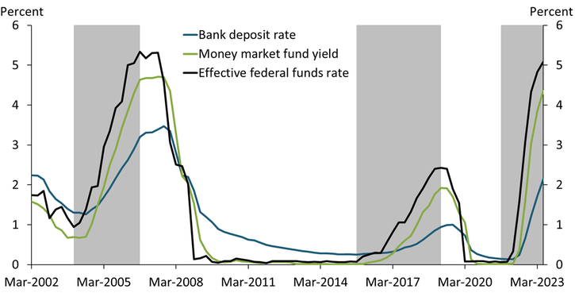
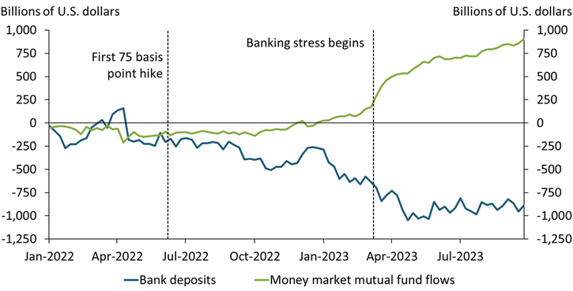

An Overview of Depository Institutions
MATT BRIGIDA
Associate Professor of Finance (SUNY Polytechnic Institute)
An Overview of Depository Institutions
What should make sense by the end of this presentation ...
- The composition of a depository institutions balance sheet
- How to identify and hedge various risks
- How bank capital is viewed by regulators
A Depository Institution means ...
- Obtain funds via deposits and uses them to offer loans to individuals and businesses.
- Match borrowers and lenders on size, and accept risk
- Diversification
- Examples are commercial banks, thrifts/savings institutions, credit unions.
A Depository Institution's Balance Sheet
$A \equiv L + E$
| Assets |
Liabilities + Equity |
| Mortgages |
Deposits |
| Consumer/Commercial Loans |
CDs |
|
Equity |
Off Balance Sheet Activities
- Loan Commitments & LOC
- Derivatives (IRS & CDS)
Liquidity Risk
Liquidity Risk is the risk that cash outflows exceed cash inflows.
Cash shortfalls can be solved via:
- Issuing additional liabilities
- Selling assets
Increasing Liabilities
- Increase deposit rates
- Deposit franchise
- Borrowing from Fed
- Avoid uninsured and brokered deposits
Source: Kansas City Fed

Source: Kansas City Fed

Selling Assets
- Asset quality. However how does this affect returns?
- Securitization
- Repos
Securitization
Securitization is a useful tool for managing liquidity. Securitization allows banks to package and sell loans, thereby generating cash.
Example: 2023 Regional Banking Crisis
- Interest rates rose along the term structure which caused losses on assets across the banking system
- Uninsured depositors pulled their deposits (89.3% of Signature Bank deposits were uninsured, 85% of SVB).
- Liquidity management must be done before the event
Managing Interest Rate Risk
Income Statement
$Net\ Interest\ Margin = \frac{Interest\ Income - Interest\ Expense}{Assets}$
Balance Sheet
Duration of assets vs liabilities
Interest RatesRise Along the Term Structure
Income Statement
- Deposit rates increase less than interest rates ($\beta < 1$)
- Banks earn more interest from floating rate securities and new issuance
- NIM may increase
Balance Sheet
- Asset duration > liabilities duration
- Market Value of Equity declines initially
- Retained earnings from increased NIM add to equity
Managing Effect of Rate Increase on Balance Sheet
Accounting Maneuvers
- Available for Sale securities are marked-to-market.
- Held to Maturitysecurities are at cost.
- $AFS \Rightarrow HTM$ during 2023 crisis (Granja 2023)
- Also see Repo 105
Interest Rates Fall Along the Term Structure
Income Statement
- Pay less on liabilities
- Earn less on assets
- NIM may decline
Balance Sheet
- Asset values increase and liability values slightly lower
- Market value of equity increases, though lower future retained earnings
- Prepayment Risk may limit asset increases and exacerbate lower NIM
- Logit models of prepayment risk
Hedging Prepayment Risk
Buy Principal-Only tranche of a CMO
Mortgage Servicing Rights
- Collect payments from homeowners and distribute to MBS owners
- Receive a fixed percent of mortgages underlying MBS
Default Risk
- Banks specialize in identifying credible borrowers
- Ex ante risk and reward
Mitigating Credit Risk
- Diversification
- CDS (lessens return)
- Moving assets off balance sheet
Bank Safety
Most simple way to increase bank safety is to increase bank capital
All Capital is Not the Same
Matt Brigida
Contact: matthew.brigida [at] sunypoly [dot] edu